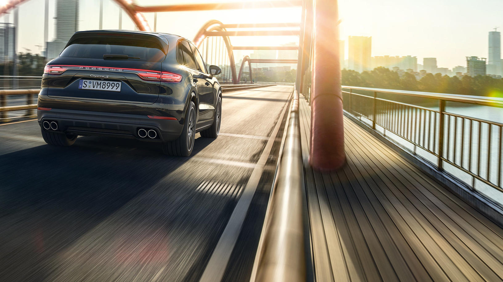

ROLLS ROYCE GHOST
There is extraordinary elegance in integrity. Ghost’s clarity of design delivers sculptural purity, self-assured luxury and agile strength.Ghost is a confident and poised visual performance. New, sweeping lines below the front grille and design updates give a focus that enhances its charisma – this is a motor car that is always dynamic, even when perfectly still.
ROLLS ROYCE PHANTOM
An unmistakeable aura. A presence that defies time itself. This is the signature Rolls-Royce; an enduring interpretation of the modern motor car.Inside the quietest Rolls-Royce ever created, silence – that rarest of joys – is yours whenever you desire it. Enhanced with discreet technology, the tranquil Phantom Suite is the epitome of contemporary luxury – for those who understand that a whisper can be louder than a shout.It’s a rare sense of scale that defines Phantom. Behind the Pantheon grille, this commanding presence is confirmed. Power is paramount to the driving experience. Phantom delivers seemingly limitless strength
BENTLEY FLYING SPUR
The sharp, sophisticated silhouette of the Flying Spur hints at both the exhilarating, all-wheel drive power that lies beneath the bonnet and the unrivalled luxury within. Consider it the ultimate expression of the exquisite craftsmanship and design that characterises the Flying Spur range.
MECEDES S600 MAYBACH
The Mercedes-Maybach S 600 Pullman Guard provides complete protection in accordance with protection class VR9 and is certified for blast resistance in accordance with Directive ERV 2010. Its protection concept is based on that of the Mercedes-Maybach S 600 Guard. The Pullman Guard has been designed and developed together with the non-special-protection Pullman and provides the same interior dimensions as the latter.
PORSCHE CAYENNE

Five doors that are open to any adventure. With a new, dynamic design and a new generation of efficient, turbocharged engines. With outstanding digital connectivity that brings the whole world into the cockpit. With versatility, quality and new cutting-edge driver assistance systems that offer both driver and passengers extraordinary comfort.
This is how the Cayenne makes the Porsche experience even more fascinating, even more diverse. And nevertheless remains that which it has always been: a genuine sports car.
TESLA MODEL S

Model S is designed from the ground up to be the safest, most exhilarating sedan on the road. With unparalleled performance delivered through Tesla's unique, all-electric powertrain, Model S accelerates from 0 to 60 mph in as little as 2.5 seconds. Model S comes with Autopilot capabilities designed to make your highway driving not only safer, but stress free.